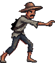
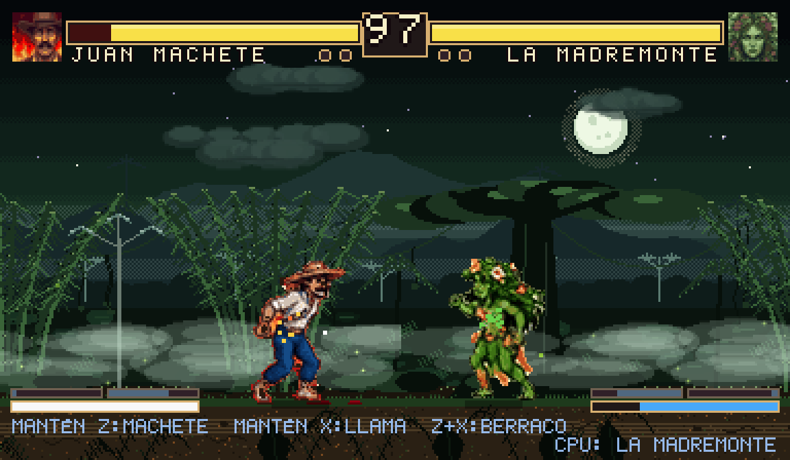
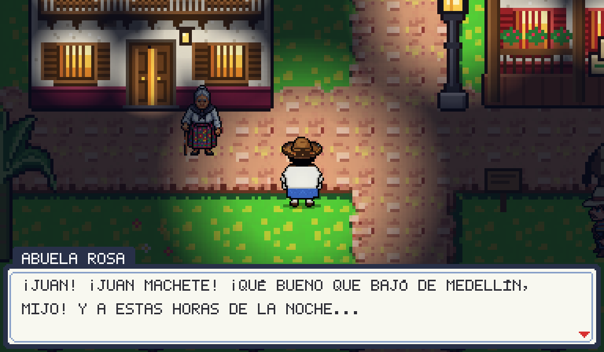
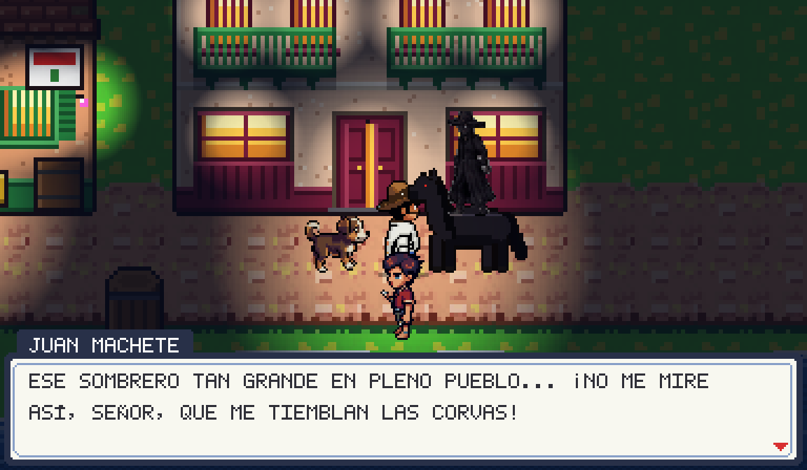
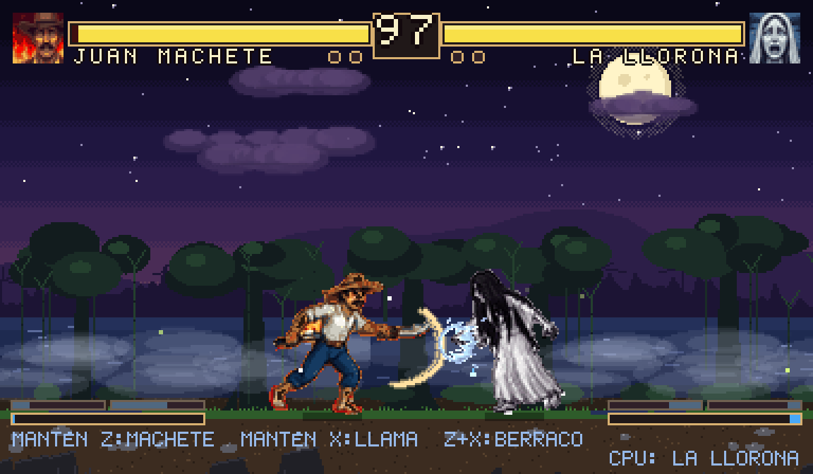
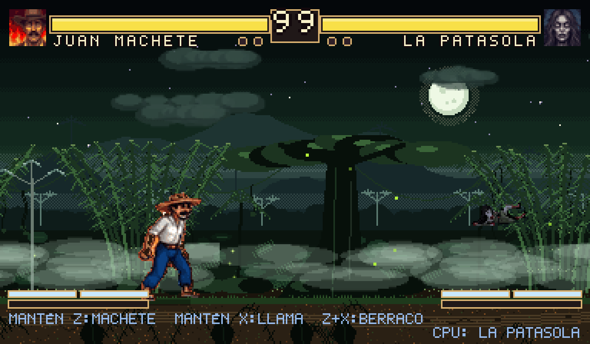
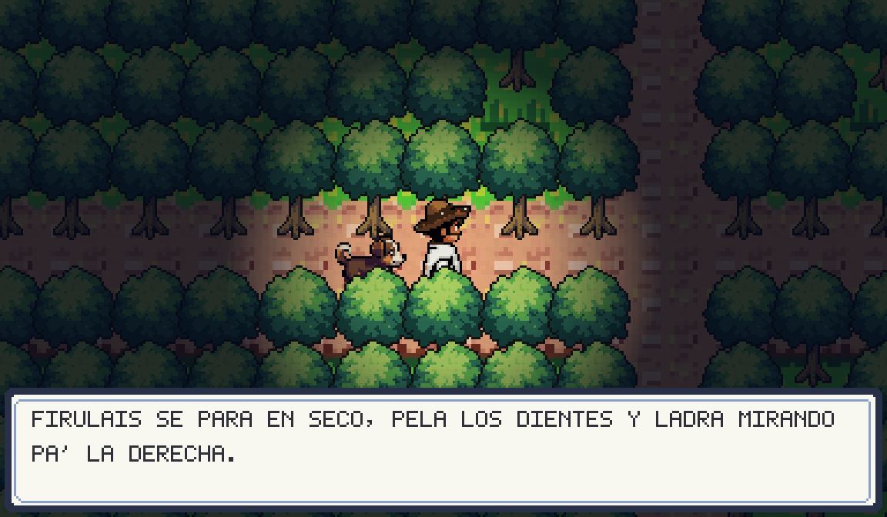
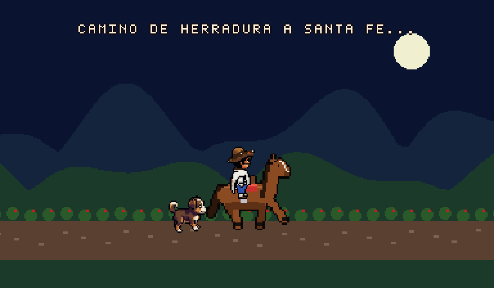
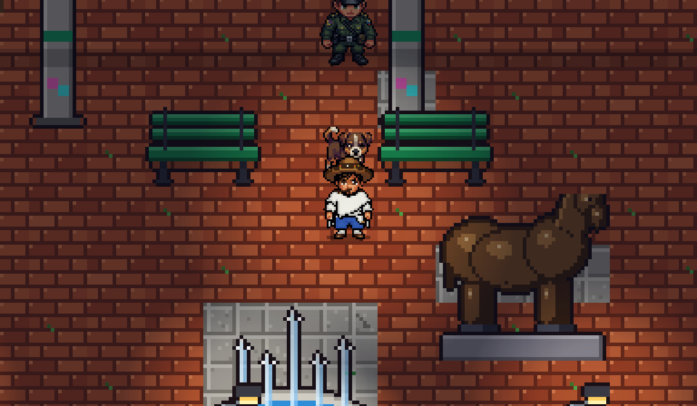

Lo que le contó la abuela Rosa
Juan baja de Medellín a visitar a su abuela y la encuentra con las puertas trancadas. Los mitos andan sueltos: el Sombrerón y la Muelona en el pueblo, el Silbón en el llano, la Llorona y el Mohán en el río, el Hombre Caimán en la ciénaga, la Patasola y la Madremonte en el monte, y Bachué allá en la laguna del sur.
No los vaya a matar, mijo. Son parte de esta tierra, hay que respetarlos. Calmelos y verá que la gente vuelve a dormir tranquila.La abuela Rosa
Los mitos no se ven en el mapa. Dejan señales, se oyen de lejos y saltan encima cuando uno menos piensa. Ahí el juego cambia a una pelea uno contra uno, al mejor de tres rondas. Si gana, el espanto se calma. Si pierde, se acaba la partida y toca empezar de nuevo.
En el camino Juan se gana un machete, un perro callejero que ladra cuando hay peligro y un caballo para viajar a Santa Fe de Antioquia.
Cuaderno de avistamientos
Lo que el cabo Ramírez ha ido apuntando de cada espanto: quién es, por dónde ronda y qué deja tirado para que uno sepa que anduvo por ahí.
¡Triqui triqui Halloween, quiero dulces para mí!Y si no me los da, le mando la Llorona a la ventana.
El 31 de octubre los niños salen disfrazados a pedir dulces. En la vereda nadie se disfraza de vampiro: los que asustan de verdad son estos nueve.
31de octubre, noche de brujas
Así se ve de noche
Pixel art de 16 bits, combate al estilo de las maquinitas de los noventa y un modo aventura para recorrer a pie, con perro y a caballo.








Dos botones y ya
Pensado para que los niños también puedan jugar: golpe y patada. Los golpes fuertes, los poderes y el definitivo salen combinando esos dos.
Funciona con teclado, con mando o en el celular, con cruceta y botones en la pantalla. Los sustos se pueden apagar en el menú si en la casa hay alguien muy miedoso.
| Moverse, saltar y agacharse | Flechas |
|---|---|
| Golpe | Z o Espacio |
| Patada | X |
| Golpe fuerte | Tres veces seguidas el mismo botón |
| Poderes | Mantener Z o X y soltar |
| Definitivo | Z + X con la barra llena |
| Bloquear | Echarse para atrás cuando el rival ataca |
¿Se le mide a salir esta noche?
Es gratis y corre en el navegador. No hay que instalar nada.
Jugar en el navegador